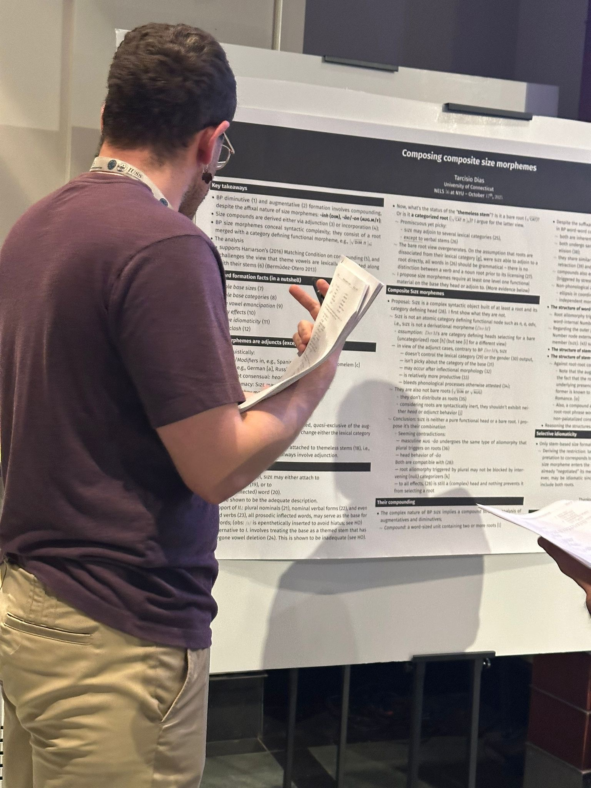

ABOUT

RESEARCH INTERESTS
I am a linguist working primarily on syntax and morphology. Languages differ in many respects, yet it is not unusual for even typologically distant languages to group together with respect to the same grammatical pattern. My work asks whether such grouping follows from more general properties of the languages involved. I investigate which independently observable properties make a pattern possible, how those properties interact, and what prevents the pattern from arising elsewhere.

My research in syntax centers on subjecthood and cross-clausal movement dependencies, particularly hyper-raising, a construction in which a subject moves out of a finite clause into the matrix clause. My dissertation, Edge Subjects, develops an account that ties the availability of hyper-raising in a language to independently observable subject properties. This approach connects hyper-raising to broader questions locality, the nature of A- and A'-movement, improper movement, freezing effects, scope, wh-movement, and the typology of subject positions.
My research in morphology focuses on size morphology, diminutives and augmentatives, particularly in Brazilian Portuguese. These formations often pattern differently from other word-formation processes in the language, allowing me to investigate how size morphology interacts with grammatical gender, theme vowels, the size and lexical category of the base, and how its morphosyntactic properties bear on phonological processes and interpretive restrictions.
More information these projects is available on my Research page.
ACADEMIC BACKGROUND
I am a PhD candidate in Linguistics at the University of Connecticut. My dissertation is advised by Željko Bošković, and I expect to defend it by the end of the calendar year.
I am a native speaker of Brazilian Portuguese.
CONTACT
Email: tarcisio.dias@uconn.edu